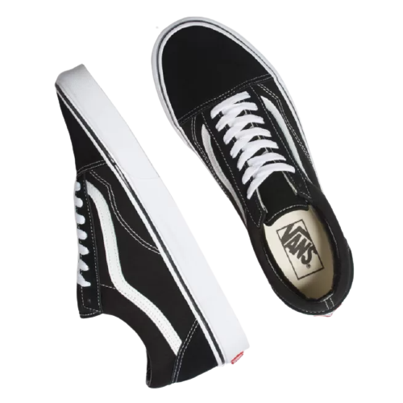

VANS BLACK WHITE OLD SKOOL
OVERVIEW
Old Skool, Vans classic skate shoe and the first to bear the iconic side stripe, has a low-top lace-up silhouette with a durable suede and canvas upper with padded tongue and lining and Vans signature Waffle Outsole.
